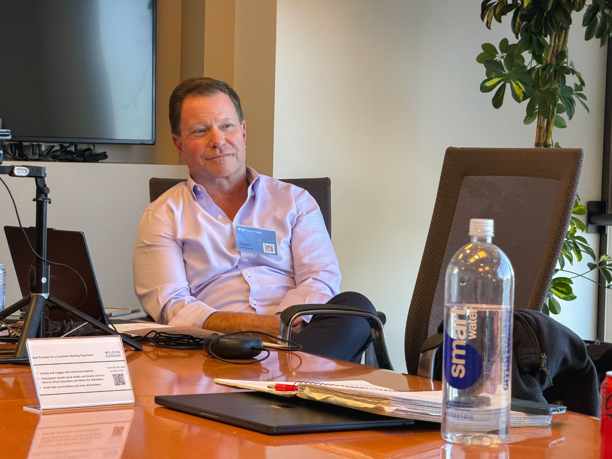

Our story
Experience is better
when it gets passed around.
The next decision may be new to you. Someone else has a useful chapter to share.

Built on FounderNexus
Started by people who have built companies.
FounderNexus began with a simple idea: useful experience should be easier to reach. Court Lorenzini, founding CEO of DocuSign, helped bring that idea to life.
VEN Global, the Venture Executive Network, builds on those roots as a peer membership for leadership teams of venture-backed companies. A growth plan asks a lot of the people building it. Useful experience should reach the founders, CEOs and senior leaders across functions who are making the calls.
Enough in common to understand. Different enough to help.
Someone at a similar stage gets the constraints. Someone with different experience may see an option you haven’t considered. You have useful experience to share, too.
Recognition is useful. Agreement is optional.
Bring an honest question, hear how someone else approached it and take that perspective back to your own work.

Our mission
Help leadership teams make better-informed decisions and execute their company’s plan.
Each month, your dedicated VEN Partner starts with your top two challenges. They help you connect with relevant peers, operators and experts, and find useful sessions. Your role, company stage and priorities shape that support. You bring what you learn back to the decisions you own.
Content placeholder One member’s decision, in their own words
A challenge.
A conversation.
What changed?
This draft space will hold one real example of how relevant experience helped a member decide what to do next.
portrait
[Member name]
[Role] · [Company]
[Company stage]
Story details to supply
- The challenge
- [The specific decision the member was working through, and what was at stake.]
- The relevant experience
- [What their Partner helped them access, and why that person or conversation was useful.]
- The decision
- [The assumption, option or action that changed after the conversation.]
- What happened next
- [The action taken and the practical result the member can substantiate.]
[A short, approved quote in the member’s own words about what helped.]
Good company. For the company you are building.
Explore for yourself or for colleagues across your leadership team. Every new eligible leader gets their own trial.
Explore membership Thinking about your team?